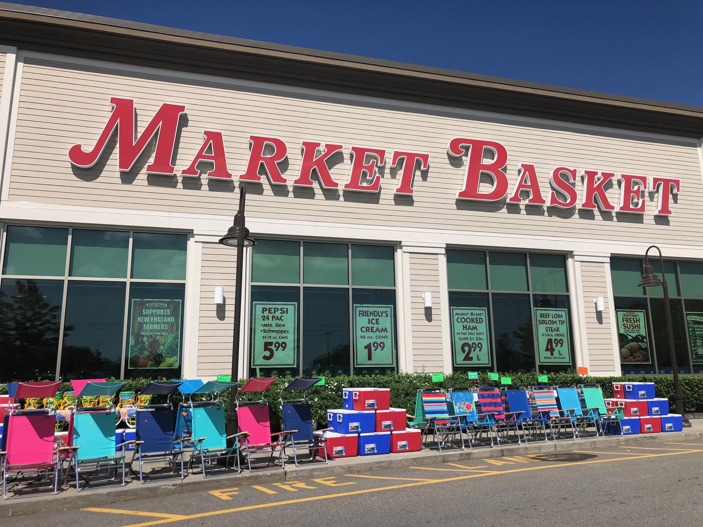

October 14, 2021
In this project, we undertook extensive data wrangling to analyze the gender distribution of employees in the company on a yearly basis, commencing from 1990. Our focus was on providing a detailed breakdown of the male and female workforce within the organization over time. Through meticulous data cleaning and manipulation, we aimed to generate comprehensive insights into the gender composition and any notable shifts or trends that occurred throughout the years. By delving into this analysis, we sought to gain a deeper understanding of the gender dynamics within the company and potentially uncover valuable insights regarding workforce diversity and inclusivity.
For the project, we acquired the Titanic dataset from Kaggle.com, which provides valuable information about the passengers onboard. The main objective of this analysis is to gain insights into the survival rate and passenger classes. By exploring the dataset, we aim to uncover patterns and trends that shed light on the factors influencing survival outcomes during the tragic event. Streamlit was used to build the Web ML application.
For this project, we obtained SUV data from Kaggle.com, which contains information about various customers. The primary goal of the analysis is to identify and understand the specific customers who are likely to purchase a new car. By delving into the dataset, we aim to uncover patterns and characteristics that can help predict and target potential SUV buyers.
In this project, the dataset includes columns related to an employee's estimated salary, age, sex, and other relevant details, with the objective of providing a comprehensive profile of each employee. To achieve this, I utilized Artificial Neural Networks (ANN) and a classification model to analyze the Churn data. By employing these advanced techniques, I aimed to gain insights into employee churn patterns, identify factors influencing attrition, and develop predictive models to effectively address retention challenges.
In this project, I utilized the Dairy Goods Sales Dataset, which offers a detailed and comprehensive collection of data concerning dairy farms, dairy products, sales, and inventory management. To enhance the performance of the machine learning models, I implemented hyperparameter tuning using grid search and K-fold cross-validation. This approach allowed me to fine-tune the model's parameters and ensure its robustness and accuracy. By leveraging these advanced techniques, I aimed to extract valuable insights from the dataset, optimize predictive models, and make well-informed decisions for dairy product sales and inventory management.

This is my Tableau data visualization project that showcases the analysis of male and female demographics, utilizing data retrieved through SQL. The project focuses on presenting comprehensive insights and trends related to gender through visually engaging and interactive visualizations. By combining the power of SQL for data extraction and manipulation with Tableau's visualization capabilities, this project provides a holistic understanding of gender-based factors, enabling informed decision-making and fostering a deeper comprehension of the analyzed data.
In this project, I analyzed a dataset of wines grown in the same Italian region but from three different cultivars. Using PCA, k-means clustering, and logistic regression/Naive Bayes, I studied the relationships between 13 constituents in the wines and their cultivars. K-fold cross-validation ensured reliable model performance assessment. In addition to uncovering relationships between constituents and cultivars, the project aimed to gain valuable insights for the wine industry's production and marketing strategies.
In this project, I leveraged my YouTube dataset to create a compelling data visualization using Excel. By extracting and utilizing the relevant data, I aimed to present valuable insights in a visually engaging manner. Through careful analysis and visualization techniques, I sought to uncover patterns, trends, and correlations within the YouTube dataset, allowing for a better understanding of the platform's performance and user behavior. This project aimed to provide clear and impactful visual representations of the data, enabling easier interpretation and communication of key findings.

In this project, we conducted an analysis of audiobook sales and reviews using Excel, followed by the creation of visualizations in Tableau. The focus of the analysis was on sales data from February 2017 to February 2018. By leveraging the data manipulation and analysis capabilities of Excel, we extracted meaningful insights from the audiobook sales and review data. Subsequently, we utilized Tableau's powerful visualization tools to present the findings in an engaging and interactive manner. Through this project, we aimed to provide a comprehensive understanding of the sales trends and patterns within the audiobook industry during the specified time period.

For this project, I employed logistic regression as a classification technique to analyze the dataset obtained from UC Irvine Machine Learning Repository. The data comprises clinical cases reported by Dr. Wolberg, with samples arriving periodically. As a result, the database is organized in a chronologically grouped manner to reflect this pattern of data collection. By utilizing logistic regression. This project sought to leverage the valuable dataset to gain insights into the factors influencing the classification outcomes in the clinical cases reported by Dr. Wolberg.
For this project, The Student Performance Dataset is a comprehensive collection of data specifically curated to analyze the factors that impact academic student performance. This dataset comprises 10,000 student records, each containing a variety of predictors and a performance index. Streamlit was used to build the Web ML application.
In this project, I employed the Bag-of-Words model to analyze restaurant reviews. The Bag-of-Words model is a commonly used approach in natural language processing (NLP) that represents text data by counting the occurrence of words within a document or corpus. By applying this model to the restaurant reviews, I aimed to extract meaningful insights and patterns from the text data. This analysis allowed me to understand the sentiments expressed in the reviews, identify frequently mentioned keywords, and potentially uncover trends or patterns related to customer experiences and preferences.

In this project, I utilized the Apriori and Eclat algorithms to perform market basket analysis. Market basket analysis is a technique used to uncover associations and patterns within a set of transactions or customer purchases. By applying the Apriori and Eclat algorithms, I aimed to identify frequent itemsets, association rules, and discover meaningful insights regarding customer purchasing behavior and product relationships.